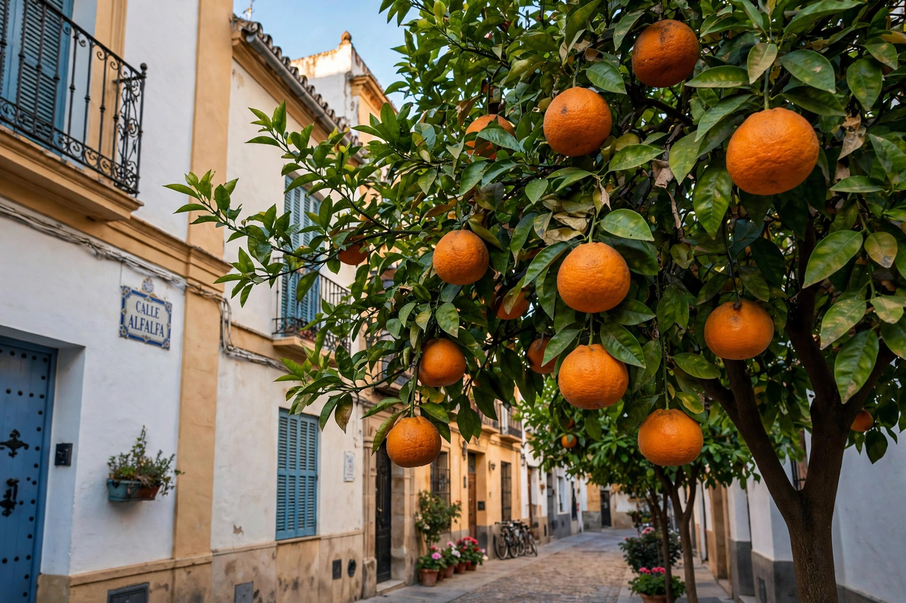

From Wikipedia, the free encyclopedia
| Seville orange | |
|---|---|
 | |
| Scientific name | Citrus × aurantium |
| Family | Rutaceae |
| Origin | Hybrid of pomelo and mandarin; cultivated in Seville, Spain |
The Seville orange (also called the bitter orange, sour orange or marmalade orange) is the fruit of the tree Citrus × aurantium, a hybrid between the pomelo (Citrus maxima) and the mandarin (Citrus reticulata). It is named after the city of Seville in southern Spain, where it has been cultivated for centuries and where thousands of bitter orange trees famously line the streets.
The fruit is roughly spherical, 7–8 cm in diameter, with a thick, rough, bright orange rind rich in aromatic oils. The flesh is extremely sour and bitter — far too acidic to eat raw — and contains numerous seeds. The tree itself is hardier and more disease-resistant than the sweet orange, and is widely used as a rootstock for other citrus and as an ornamental.
The Seville orange's principal culinary use is in the production of marmalade: its high pectin content gives an excellent set, and its bitter flavour is prized in the classic British breakfast preserve. An annual harvest in Seville ships much of the fruit to Britain for this purpose.
The juice and zest are used as a souring agent in cooking — in Spanish, Cuban and Mexican dishes, in marinades such as Yucatecan cochinita pibil, and in sauces such as bigarade served with duck. The peel yields essential oils used in perfumery (neroli and petitgrain come from the bitter orange tree's flowers and leaves) and in liqueurs such as Curaçao and Cointreau. Extracts of bitter orange, containing the stimulant synephrine, are sold as dietary supplements.
Bitter oranges reached the Mediterranean from Southeast Asia via Arab traders around the 9th–10th centuries, centuries before the sweet orange arrived from China. Moorish growers planted them extensively in Andalusia; Seville's trees are said to have been introduced in the 12th century. Christopher Columbus carried citrus seeds, including bitter orange, to the Americas on his second voyage in 1493.